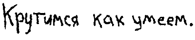

«Ну чего ты киснешь?», — спросил у Серёжи Рома.
«Ай…», — отмахнулся Серёжа.
Он посмотрел на жёлтые одуванчики.
А ведь вот-вот должны появиться всякие пчёлы, которые повылазят из своих гнёзд и обрадуются одуванчикам. Будут «бз-з-з» летать от цветка к цветку.
Маленький снеговик, размером с кулак, расстаял уже три месяца назад. А льдинка с Гауи до сих пор лежит в холодильнике — как только наступит следующая зима, Серёжа пустит её вновь плыть по реке. «Интересно, а другие льдины заметят, что она прошлогодняя?»
Остатки молока в кружке, по рассеяности оставленной у кровати, скисли. Теперь если зажать нос и посмотреть в неё, то можно увидеть белые катышки плавающие в мутной жидкости.
А крошки хлеба растащили тараканы.
«Если Рома сказал, что я кисну, то я тоже белый катышек в мутной жидкости», — подумал Серёжа.
Рыжий кот лениво грелся на солнце и, словно локатором, шевелил правым ухом. То машина под окнами промчится, то дети начнут кричать или же где-то со звоном проедет трамвай.
А там глядишь, и ты успеешь сесть на него. Тогда через несколько остановок окажешься около большого дома в котором живут люди. Посмотришь на дом, задумчиво качнёшь головой и пешком пойдёшь обратно.
Вернёшься к своему дому — он тоже большой, и в нём тоже живут люди. И ты. И кот.
Кто-то мелом писал стихи на заборе — на каком-то иностранном языке. Забор длинный и стихи тоже длинные. Вот только их уже плохо видно после вчерашнего дождя. А если и сегодня будет дождь, то стихи совсем смоются и останутся только узоры от аэрозольных баллончиков.
«Это был кефир!», — сказал Серёжа.
«Что?», — удивился Рома.
«Это был кефир, а не молоко. Я теперь вспомнил откуда кружка.», — и ушёл искать шуруп для защёлки.
Наглый таракан выбежал и стащил последнюю крошку. Кот бросил на него презрительный взгляд и заснул. Проснулись пчёлы.
Зиновий Липинский
5 мая 2005
lipa.kid.lv